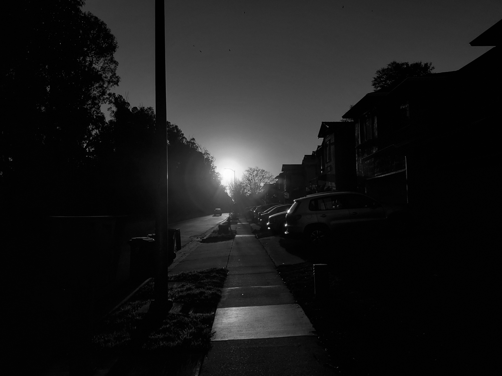
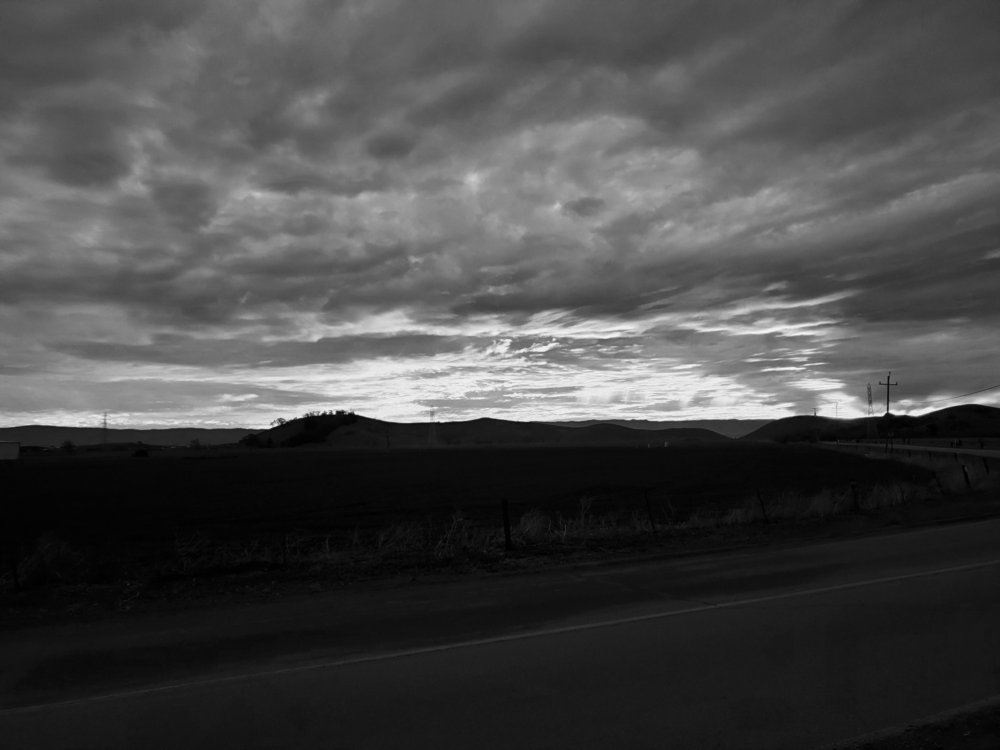

TW
My name is
Timothy Wei.
I am:
Observing
Reclusive
Self-assured
Obliging
Levelheaded
Known languages:
HTML
CSS
A Bright Sun Over Some Street Somewhere
Ridgewood Dr, Union City, CA
January 23, 2021

A Sunset Over Some Random Hills
Coyote Hills Regional Park, Fremont, CA
January 31, 2021

#000000
#646464
#FFFFFF
#FF4646